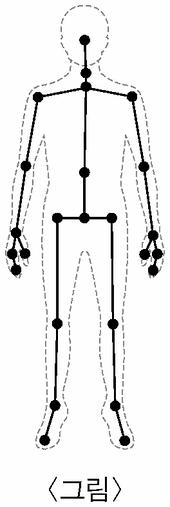

메타버스
지문을 먼저 읽고, 이해가 막히는 문단에서 ‘그림으로 보기’를 누르세요. 그림은 문단을 따라 바뀝니다.
1문단‘메타버스(metaverse)’는 ‘초월’이라는 의미의 ‘메타(meta)’와 ‘세계’를 뜻하는 ‘유니버스(universe)’의 합성어로, 현실 세계와 가상 공간이 적극적으로 상호 작용하는 공간을 의미한다. 감각 전달 장치는 메타버스 속에서 사용자를 대신하는 아바타가 보고 만지는 것으로 설정된 감각을 사용자에게 전달하는 장치이다. 사용자는 이를 통하여 가상 공간을 현실감 있게 체험하면서 메타버스에 몰입하게 된다.
2문단시각을 전달하는 장치인 HMD*는 사용자의 양쪽 눈에 가상 공간을 표현하는, 시차*가 있는 영상을 전달한다. 전달된 영상을 뇌에서 조합하는 과정에서 사용자는 공간과 물체의 입체감을 느낄 수 있다. 가상 공간에서 물체를 접촉하는 것처럼 사용자의 손에 감각 반응을 직접 전달하는 장치로는 가상 현실 장갑이 있다. 가상 현실 장갑은 가상 공간에서 아바타가 만지는 가상 물체의 크기, 형태, 온도 등을 사용자가 느낄 수 있도록 설계되어 있다. 이 외에도 가상 현실 장갑은 사용자의 손가락 및 팔의 움직임에 따라 아바타를 움직이게 할 수 있다.
3문단한편 사용자의 움직임을 아바타에게 전달하는 공간 이동 장치를 이용하면, 사용자는 몰입도 높은 메타버스 체험을 할 수 있다. 공간 이동 장치인 가상 현실 트레드밀은 일정한 공간에 설치되어 360도 방향으로 사용자의 이동이 가능하도록 바닥의 움직임을 지원한다.
4문단[A] 가상 현실 트레드밀과 함께 사용되는 모션 트래킹 시스템은 사용자의 동작에 따라 아바타가 동일하게 움직일 수 있도록 동기화하는 시스템으로, 동작 추적 센서, 관성 측정 센서, 압력 센서 등으로 구성된다. 동작 추적 센서는 사용자의 동작을 파악하며, 관성 측정 센서는 사용자의 이동 속도 변화율 및 회전 속도를 측정한다. 압력 센서는 서로 다른 물체 간에 작용하는 압력을 측정한다. 만약 바닥에 압력 센서가 부착된 신발을 사용자가 신고 뛰면, 압력 센서는 지면과 발바닥 사이의 압력을 감지하여 사용자가 뛰는 힘을 파악할 수 있다. 모션 트래킹 시스템이 사용자의 동작 정보를 컴퓨터에 전달하면, 컴퓨터는 사용자가 움직이는 방향과 속도에 ⓐ맞춰 트레드밀의 바닥을 제어한다. 이와 같이 사용자의 이동 동작에 따라 트레드밀의 움직임이 변경되기도 하지만, 아바타가 존재하는 가상 공간의 환경 변화에 따라 트레드밀 바닥의 진행 속도 및 방향, 기울기 등이 변경되기도 한다. 또한 사용자의 움직임이나 트레드밀의 작동 변화에 따라 HMD에 표시되는 가상 공간의 장면이 변경되어 사용자는 더욱 현실감 높은 체험을 할 수 있다.*HMD: 머리에 쓰는 3D 디스플레이의 한 종류.
*시차: 한 물체를 서로 다른 두 지점에서 보았을 때 방향의 차이.
윗글을 바탕으로 <보기>를 이해한 내용으로 적절하지 않은 것은? [3점]

동작 추적 센서의 하나인 키넥트 센서는 적외선 카메라와 RGB 카메라 등으로 구성된다. 적외선 카메라는 광원에서 발산된 적외선이 피사체의 표면에서 반사되어 수신되기까지 걸리는 시간을 측정하여, 피사체의 입체 정보를 포함하는 저해상도 단색 이미지를 제공한다. 반면 RGB 카메라는 피사체의 고해상도 컬러 이미지를 제공한다. 키넥트 센서는 저해상도 입체 이미지를 고해상도 컬러 이미지에 투영하여 사용자가 검출되는 경우, <그림>과 같이 신체 부위에 대응되는 25개의 연결점을 선으로 이은 3D 골격 이미지를 제공한다.